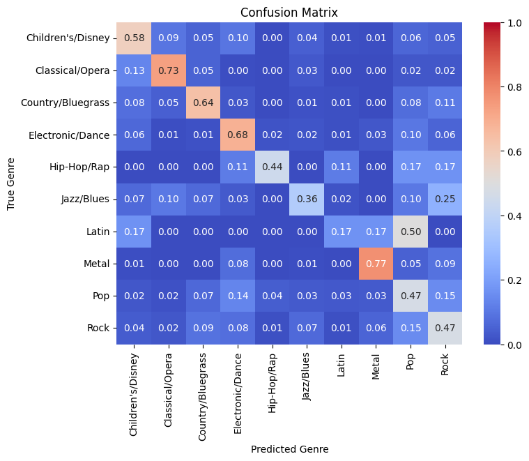

About the Project
This bot uses Discord as an interface to interact with users and analyze songs. It predicts genres, retrieves lyrics, and provides insights based on a trained machine learning model and preloaded databases. The project integrates Discord API, Spotify datasets, Genius API, and multiple machine learning techniques.
The discord bot contains 2 main functionalities: genre prediction and lyrics retrieval. These functions use the machine learning model and the Genius API to provide users with song genre predictions and lyrics. The bot also stores the results of the predictions in a database, used to improve and retrain the model.
Model Flow Summary

This is a visualization build with Mermaid.js that shows the user interaction with the bot, the model prediction, and the database storage. This gives a high-level overview of the project and how the different components interact with each other.

This is a confusion matrix that illustrates the performance of the final model on the test set. A row represents the true genre with rows adding up to 1 representing all the songs of this genre. A column represents the models prediction, with these values having more variance. The warmer colors represent a higher accuracy with perfect predictions being on the diagonal.
Using this visualization we can understand which genres the model struggles with and which ones it predicts well. We are able to see that genres such as Opera and Metal are predicted with high accuracy, while genres such as Pop and HipHop are predicted with lower accuracy. Standing out is the high number of misclassifications between Pop and Latin, which points out an obvious overlap between these styles of music.
Contact
If you have any questions or would like to get in touch, please email me.